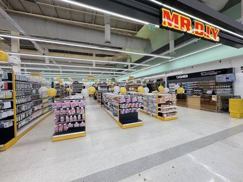

Big C South Pattaya / Lotus's South Pattaya
Чем хорош: Главная закупка: вода, подгузники, детское, фрукты, сувениры по низким ценам. Есть фуд-корт и отдел готовой еды (после 19–20 часов — скидки). В галерее обычно аптека Watsons или Boots.
Часы: Big C ≈ 8:00–24:00, Lotus's ≈ 8:00–22:00